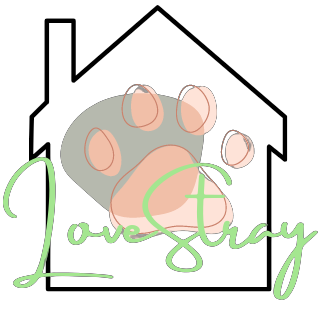

Jinnie was taken in after he was seen wandering the streets of a concerned citizen's neighborhood. They mentioned having Jinnie come to their house frequently for food, and noticed that he had fleas all over his fur.
Mia was taken in after the team went on its annual retreat. A team member approached a stray cat, and noticed that she was skinny and had fleas in her fur. The team member was concerned for her well-being, so they went home together after the retreat ended.
Mia loved playing with our sanctuary's toys, as well as the other cats. She was finally able to go home with a young couple who connected immediately with her as soon as they stepped in the room.
Milk was a stray cat found by a concerned citizen, who said that they saw him wandering around our sanctuary. We were immediately captivated by her very upturned, crystal blue eyes. However, she was frail as a stick. She looked like she hadn't eaten in days.
After pampering her, she was able to mingle for a bit with other cats. Our visitors would also be immediately drawn to her, but they always felt afraid to take her home because of her piercing gaze that made her look intimidating. But to us, she was a cat that loved to be dependent and was always seen sticking to one of our team members.
She was finally taken home by a young man who wasn't deceived by her looks, and she didn't leave his arms when they met for the first time.
Mami was a stray cat who imprinted herself on one of our team members that took her in because they found out that she was pregnant. When she was taken into our sanctuary, she was constantly coming to us, especially when she was hungry. She would also always ask us for pets, because she loved them. When her kittens were born, it didn't stop her from cuddling with us.